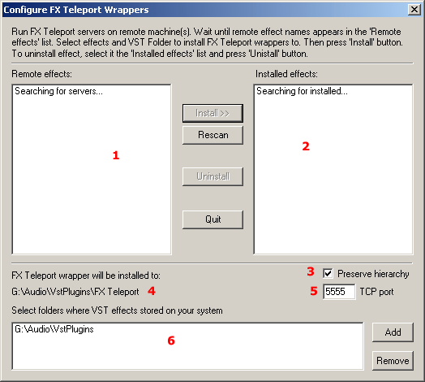
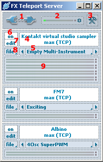
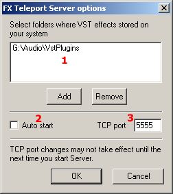
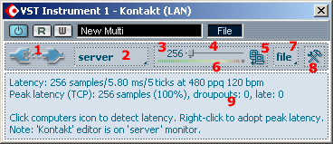
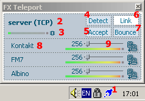
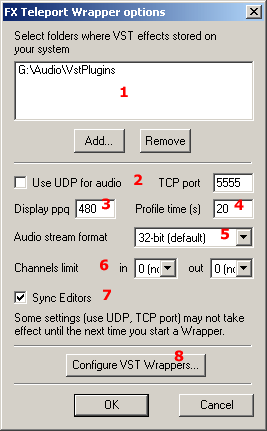

|

VST Instruments and VST Effects are supported
|
|
| |
Interface overview
Configure (Install Effects) applet
Server
Server Options
Wrapper
Wrapper Tool Window
Wrapper Options
Configure (Install Effects) applet
The FXT Configure applet is used to
Install and Remove FXT VST wrappers (small applications accessible from your
VST host as ordinary plug-ins and serving as bridges to teleported FX).
|  |
1. List of remote plug-ins.
2. List of local wrappers installed.
3. Check to use original VST folder layout for FXT Wrappers.
4. FXT Wrappers destination folder.
5. TCP Port.
6. VST paths.
|
Slave (Server)
FXT Server launches on slave computers and
provides the access for remote hosts to VST plug-ins, installed on the machine.
|  |
Server window
1. FXT Logo - click to see the "About" dialog, right-click to switch between narrow and full views.
2. CPU load indicator.
3. Tools button - click to open the "Options" dialog.
4. Plug-in name.
5. Current preset - click on it or use the arrows to select preset.
6. On/Off button - shift-click to unload plug-in.
7. Edit button - toggles plug-in edit window.
8. File menu - use it to load/save .fxt and .fxb preset files.
9. Output indicators.
|
|  |
Options
1. VST paths.
2. Check to auto start FXT Server on Windows boot.
3. TCP port number.
|
Master (Host)
|  |
Wrapper
1. FXT Logo - click to open the
"About" dialog to enter your registration code, shift-click to switch
between the local and remote modes, right-click to toggle between narrow and
full view, right-shift-click to toggle remote editor.
2. Server/Local/Remote combo box.
3. Latency value (samples).
4. Latency slider - little triangle shows current peak value; click and drag to
change latency, right-click to accept current peak value.
5. Computers icon - click to start/stop latency auto detection, right-click to
accept current peak vale and reset latency statistics.
6. Latency indicator - shows the actual to current latency ratio. When dropout
occurs, the light becomes red. Click to reset latency statistics.
7. File menu - use to load/save .fxt and .fxb preset files.
8. Tools button - click to open the "Options" dialog.
9. Status pane - shows current latency in samples, milliseconds and ticks at
current tempo; and other latency statistics.
|
|  |
Tool window
1. Status bar icon - click to show the tool window.
2. Server name.
3. Server CPU load.
4. "Detect" button - click to start/stop latency auto detection.
5. "Accept" button - click to accept current peak latency.
6. "Link" button - groups all latency sliders.
7. "Bounce" button - use it when bouncing in non-Steinberg hosts (SONAR, Logic, ...).
8. Plug-in name.
9. Latency controls - work the same way as in the wrapper window.
|
|  |
Options
1. VST Paths.
2. TCP options.
3. PPQ value used to display latency time in ticks.
4. Time for latency auto detection - set to 0 to avoid auto detection.
5. Network audio stream format - select non-default values to save bandwidth.
6. Limitation on the number of audio channels transmitted/received -
select non-default values to save bandwidth.
7. Sync Editors - check to make remote editor open when local is open and
close when local is closed.
8. Click to open "Add/Remove" wrappers (Configure applet).
|
Manual | Overview |
Installation | Interface |
Working with FXT
|
|
|

Danny Lux, TV composer:
This product has changed the way I work. (...)
I run about 30 to 40 VSTi's on FXT machines. (...)
I am using FXT on every project right now... >>>
|
|
|
Want more CPU resouces staying with one-machine DAW?
Checkout FX Freeze - the solution for using CPU for 200%, 300% without overloads.
Click here to read more.
|
|
|